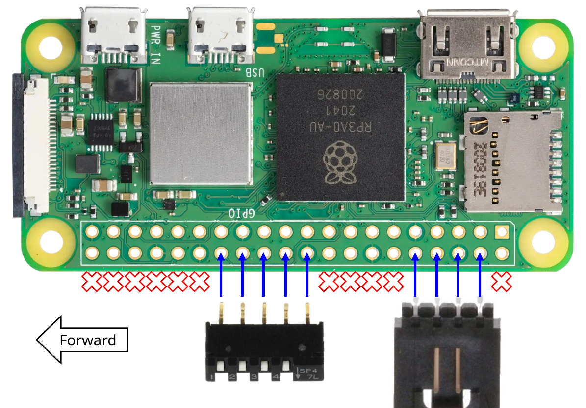
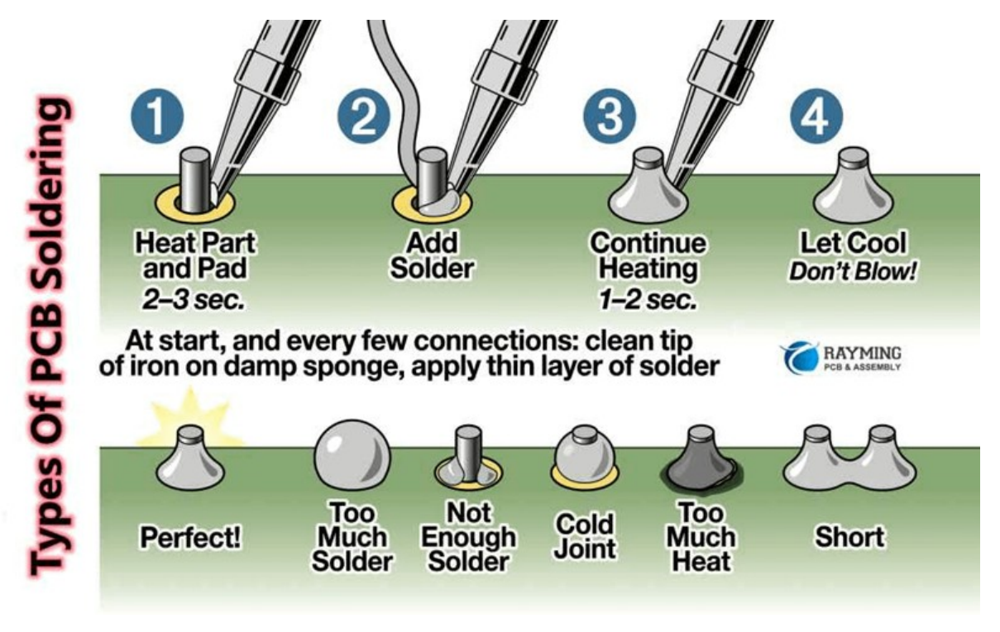

Task 1: Prepare the Raspberry Pi
Install the 4-pin latch header and SIP switch on the Raspberry Pi Zero 2 W.
No blockers
Task 1: Prepare the Raspberry Pi
Install the 4-pin latch header and SIP switch on the Raspberry Pi Zero 2 W.
Blockers
This task has no blockers. It can be started immediately.
None
Not marked complete
Parts required
- Raspberry Pi Zero 2 W
- Molex 4-pin latch header
- Single in-line package (SIP) switch
- Solder
Tools required
- Eye protection
- Ventilation fan
- Soldering station
- Soldering iron
Step 1. Prepare the bench and place the parts
- Retrieve the Raspberry Pi Zero 2 W, the Molex 4-pin latch header, and the SIP switch from the supplies shelf.
- Put on eye protection. Turn on the ventilation fan.
- Turn on the soldering station and set it to 750 °F.
- While the iron is heating, insert the 4-pin header and the SIP switch into the Raspberry Pi GPIO holes exactly as shown in Fig. 1a. Do not rotate either part.
STOP! Seek instructor validation before soldering. The parts must match Fig. 1a exactly.

Fig. 1a. Insert the 4-pin header and SIP switch exactly as shown before soldering.
Step 2. Flip the board and solder all nine pins
- With both parts still inserted, carefully flip the Raspberry Pi so its bottom side faces upward.
- Set the board down gently so it rests on the inserted parts and the nine pins point upward.
- For each pin, touch the iron tip to the pad and the pin at the same time.
- Feed a small amount of solder into the joint until a smooth, shiny fillet forms.
- Remove the solder first, then remove the iron, and allow the joint to cool undisturbed.
- Repeat until all nine pins are soldered.
Inspection standard
Inspect all nine joints. Reflow any joint that looks dull, cracked, grainy, or insufficiently wetted.
Inspect all nine joints. Reflow any joint that looks dull, cracked, grainy, or insufficiently wetted.

Fig. 1b. Use this joint profile as the soldering standard.
Common errors
- Soldering before an instructor has verified the part orientation.
- Applying so much solder that adjacent pads or pins bridge together.
- Heating the joint too long and damaging the pad or nearby plastic.
- Moving the board before the joint cools, which creates a dull or cracked solder joint.